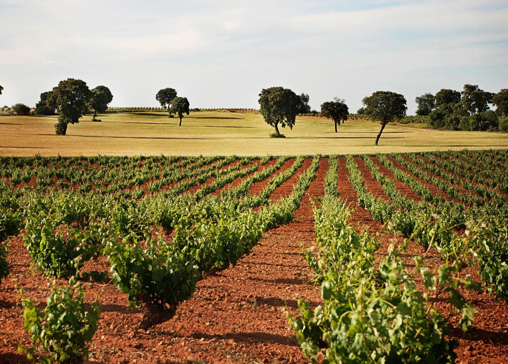
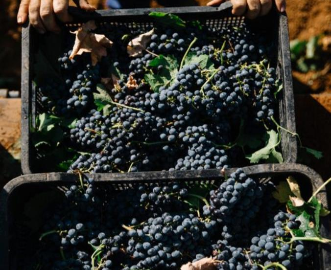
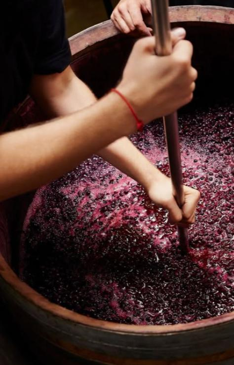

Classic Visit & Tasting
A walk through the vineyard and cellar, followed by a guided tasting of four wines from the collection, paired with local cheese and olive oil.
€25 / person
Book

A family winery among century-old vineyards. Walk the estate, taste wines from native grapes and stay for lunch surrounded by nature.
Pinuaga is a family winery in La Mancha where three generations have looked after the same vines. We farm organically, we recover old Cencibel clones and we craft with minimal intervention.
What you taste in a glass started decades ago — in the soil, in the vine, and in the hands that worked them.
Read our story → The crew · Harvest 2024
The crew · Harvest 2024
Designed for couples and small groups. You're welcomed by someone from the family, we walk the estate, we taste, and we eat very well.
A walk through the vineyard and cellar, followed by a guided tasting of four wines from the collection, paired with local cheese and olive oil.

The full experience: tour, tasting and a three-course lunch made with local produce, served at the estate. The right plan for celebrating something.

Three weekends a year. Pick with us in the morning, see the grapes come in, taste the fresh-pressed must and stay for lunch at the cellar.

No formulas, no shortcuts. Just three principles we've held onto since the first generation planted these vines.
No synthetic chemicals, no shortcuts. We work the land and the vine respecting natural cycles, and we certify every vintage. What goes into the bottle is what happens in the field.
We've recovered old Cencibel clones — La Mancha's historic variety — and we still farm plots most growers have given up on. Each wine has a clear origin and a place in the family.
We craft with patience and we don't force anything. Spontaneous fermentations, slow aging, and as little as possible between the grape and your glass. The wine speaks for itself.
From 200 Cepas — our old-vine Tempranillo, Silver at the Organic Wine Masters — to Pinuaga Rosé, fresh and fruit-driven. Labels hand-painted by the artist Miguel Ángel Muñoz Zamora.
Reds, rosé and white. All organic. All made here.
See the collection → Pinuaga collection · 2024
Pinuaga collection · 2024

The best Pinuaga moments don't happen in tasting rooms. They happen on terraces at sunset, on long Sunday lunches, on weekends that turn into stories. Wine is a vehicle — the destination is the people you open it with.
Plan your visit →Good wine is made in the field. In the cellar we only look after it until it reaches your glass.— The Pinuaga family